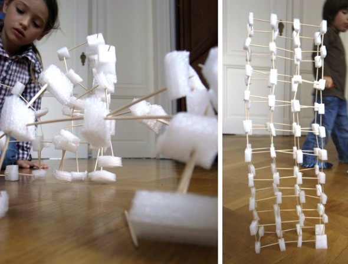
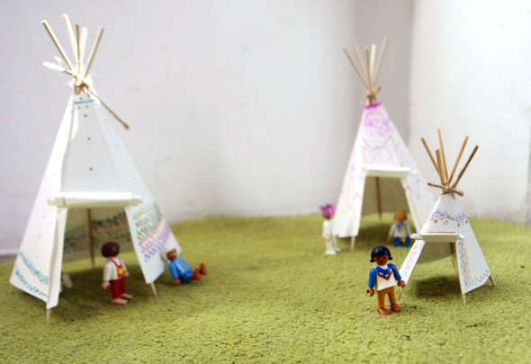

Construction:
We sticked together toothpicks and squares of styrofoam, and we just learned the necessity of having a structure to build a tower.




Tower 03 At beaches with stones you can construct very high towers using stones with the same shape but with different dimension. You put one over…
Read more →

Nature paint brush This paint brushes we made with stuff we found on the field and at the beach. With wire we fixed it on a…
Read more →